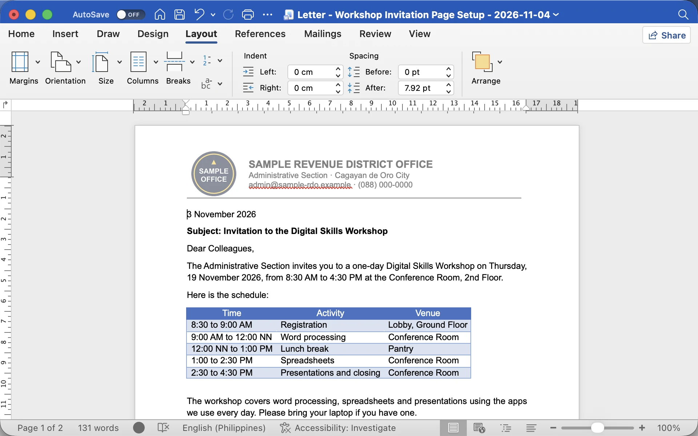
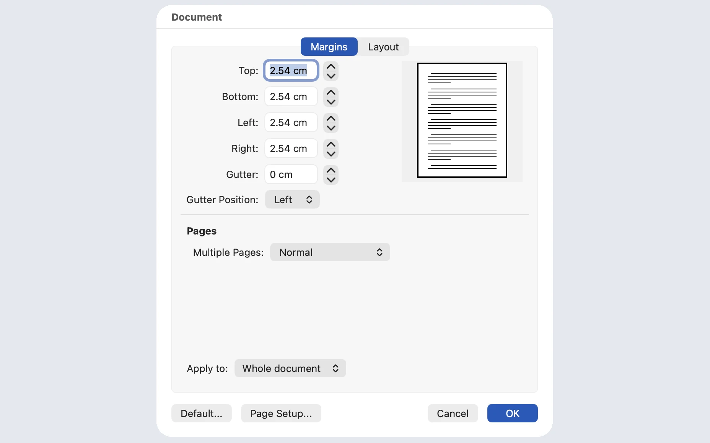
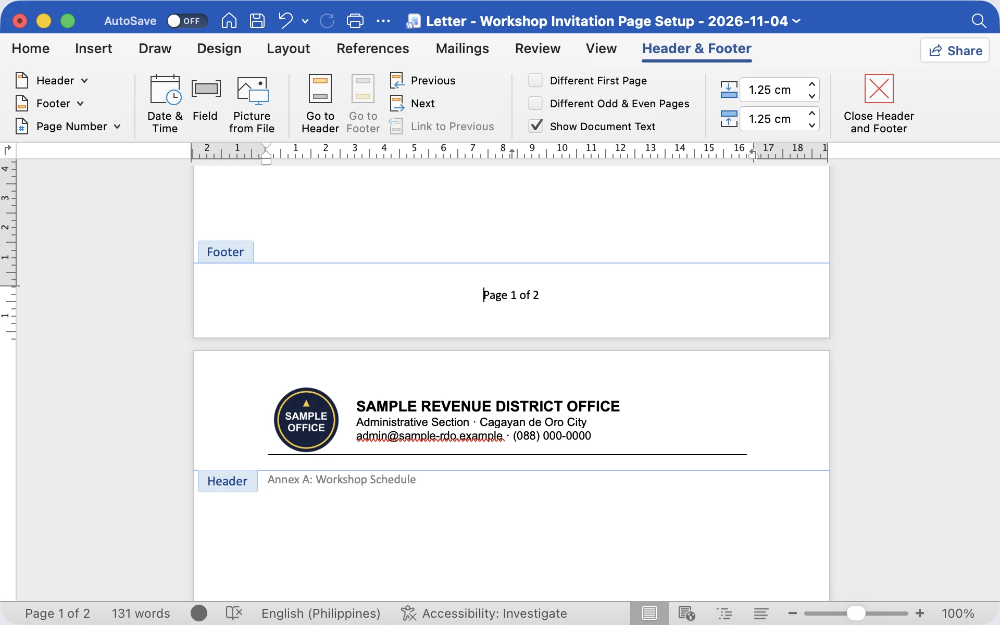

Microsoft Word for Mac, sample letter. Mac shows centimetres here; 2.54 cm = 1 inch. Workshop invitation letter (start)
- Layout › Margins › Normal: 1" on all four sides.
- Or Margins › Custom Margins… and type 1" in Top, Bottom, Left and Right. Word converts it: 2.54 cm.
 Docs: File › Page setup, type 1 in each margin box (inches).
Docs: File › Page setup, type 1 in each margin box (inches).
Writer: Format › Page Style › Page, margins 1" (2.54 cm).
On Windows the Custom Margins box is called Page Setup; on the Mac it is Document.
Demo in Word: Layout tab, Margins, Normal. Normal is 1 inch on all four sides. Then open Custom Margins to show where you'd type exact values.
If someone's ruler shows centimetres, 1 inch is 2.54 cm. In Word you can still type 1" and it converts.
Ask everyone to set 1-inch margins on their invitation letter now and react with a thumbs up when done.

Microsoft Word for Mac, sample letter: footer of page 1, header of page 2. Workshop invitation letter (start)
- Insert › Header or Footer, or double-click the top or bottom of the page. Word opens the Header & Footer tab.
- Page Number (or Insert › Page Number) › Bottom of Page. "Page X of Y" updates itself: here Page 1 of 2.
- Tick Different First Page when page 1 has a letterhead and no number.
- Double-click the body or click Close Header and Footer.
Docs: Insert › Headers & footers; Insert › Page numbers. Writer: Insert › Header and Footer; Insert › Page Number.
Demo: double-click the top of the page to open the header, type the office name, then add a page number at the bottom with "Page X of Y".
Show Different First Page: very useful when page 1 carries the letterhead and you don't want a number on it.
Ask: "Who has typed page numbers by hand?" A few hands. Explain that automatic numbers update themselves when the document grows; typed ones don't.

Microsoft Word
File › Print or Ctrl + P. The preview is on the right; use the arrows to page through.
Google Docs
File › Print or Ctrl + P opens the browser's print preview.
LibreOffice Writer
File › Print Preview (Ctrl + Shift + O), or the preview inside File › Print.
In the preview, check:
Print preview is free; paper and ink are not. Make it a habit: Ctrl+P, look, then decide.
Mac users press Cmd+P.
Read the five checks out loud. Ask: "Which one would have saved you in the warm-up?" Most will say the signature or the page count.
Word · File › PrintPrint settings
Print only what you need, the way you need it
- Pages: type 1-3, 5 for pages 1, 2, 3 and 5.
- Collated gives complete sets (1-2-3, 1-2-3). Uncollated gives 1-1-1, 2-2-2.
- Both sides: automatic if the printer supports it, or "manually" (you flip the stack).
- Scale to Paper Size fits an A4 file onto long bond, or the reverse.
- Print to PDF makes a file instead of paper.
Demo: press Ctrl+P in Word and walk down the settings. Type a page range like 1-3, 5.
Explain collated with a real case: three copies of a 3-page report for three signatories. Collated gives three ready sets; uncollated means sorting by hand.
Both sides depends on the printer. "Manually print on both sides" prints the odd pages first, then asks you to flip the stack. Do one test sheet first so you know which way to flip.
Word
File › Save As › PDF, or File › Export › Create PDF/XPS.
Google Docs
File › Download › PDF Document (.pdf).

LibreOffice
File › Export As › Export as PDF, or the PDF button on the toolbar.
Any app on Windows
Choose Microsoft Print to PDF as the printer in the print window.
A PDF is "digital paper". Use it when a document will be emailed, uploaded or archived rather than printed.
Point out that Word, Google Docs and LibreOffice all export PDF directly, and on Windows any app can "print" to PDF.
Stress: keep the .docx too. The PDF is for sharing; the .docx is for editing. Ask: "How do you usually send a signed scanned letter?" Often as a PDF already.